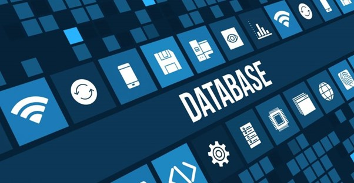

Tipos de Bases de Datos
Existen diversos tipos de bases de datos, cada uno de ellos enfocados a funciones específicas. A continuación, se presentan los principales tipos:
Base de datos relacional
Las bases de datos relacionales son las más comunes en la actualidad. Consisten en una serie de contenedores de información denominados tablas, en los que se almacenan registros. Los registros serían las filas de las tablas mientras que sus campos de éstos serían las columnas.
Ejemplo: MySQL, PostgreSQL, Microsoft SQL Server.
Ventajas:
- Alta integridad de datos y consistencia.
- Soporte para SQL, un lenguaje estándar y poderoso.
- Relaciones bien definidas entre los datos.
Base de datos distribuida
Las bases de datos distribuidas son aquellas en las que la información no reside en un único servidor de bases de datos, sino que existen diversos servidores, a menudo en redes distintas, que mantienen una porción de los datos.
Ejemplo: Apache Cassandra, Google Spanner.
Ventajas:
- Mayor disponibilidad y tolerancia a fallos.
- Escalabilidad horizontal.
- Acceso rápido a los datos desde múltiples ubicaciones.
Base de datos orientada a objetos
Son un modelo de bases de datos en las que la información se almacena mediante objetos. Los objetos son conjuntos heterogéneos de datos, tan complejos como sea necesario para modelizar aquella información que se necesite.
Ejemplo: db4o, ObjectDB.
Ventajas:
- Compatibilidad con lenguajes de programación orientados a objetos.
- Soporta estructuras de datos complejas.
- Mayor eficiencia en ciertas aplicaciones específicas como diseño CAD y simulaciones.
Base de datos gráfica
Son un tipo de bases de datos donde se guardan datos y sus relaciones. Sin embargo, las relaciones en este modelo de base de datos son ciudadanos de primer nivel, ya que se almacenan tal cual en la base de datos y no mediante índices como en las relacionales.
Ejemplo: Neo4j, ArangoDB.
Ventajas:
- Optimización para consultas con relaciones complejas.
- Ideal para redes sociales y motores de recomendación.
- Mayor flexibilidad en la estructura de datos.
Base de datos NoSQL
Las bases de datos NoSQL (Not only SQL) son aquellas en las que no se usan tablas sino colecciones de elementos. Los elementos almacenados en las colecciones pueden ser heterogéneos, permitiendo una mayor flexibilidad y velocidad de recuperación de la información.
Ejemplo: MongoDB, CouchDB.
Ventajas:
- Alto rendimiento en consultas.
- Alta escalabilidad horizontal.
- Ideal para big data y aplicaciones en la nube.